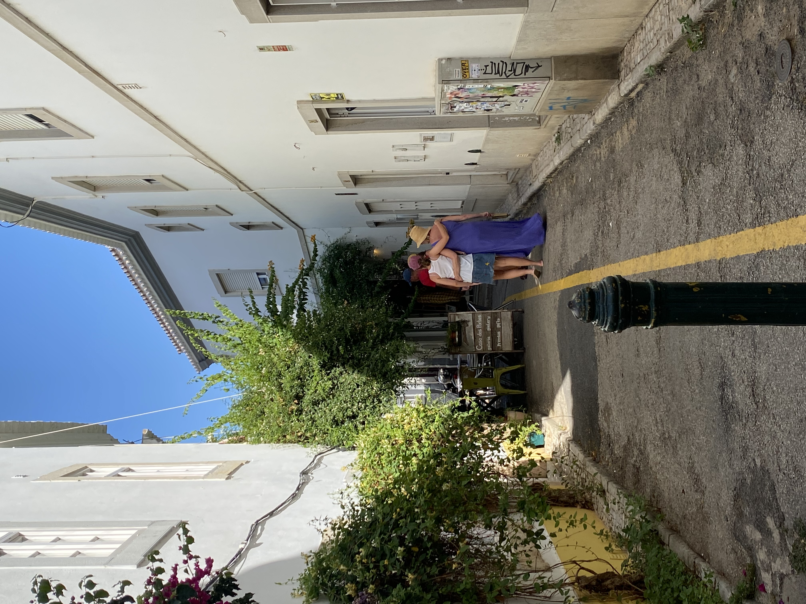
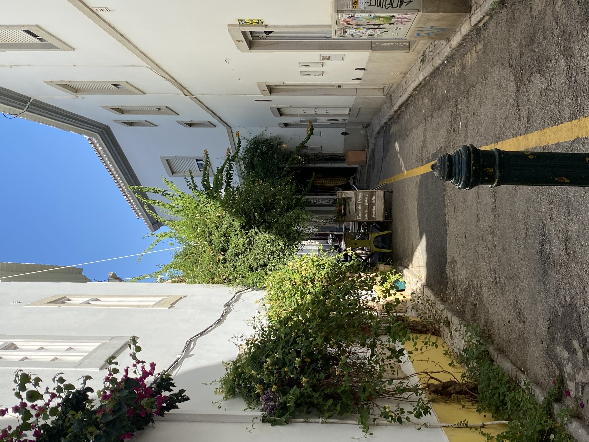
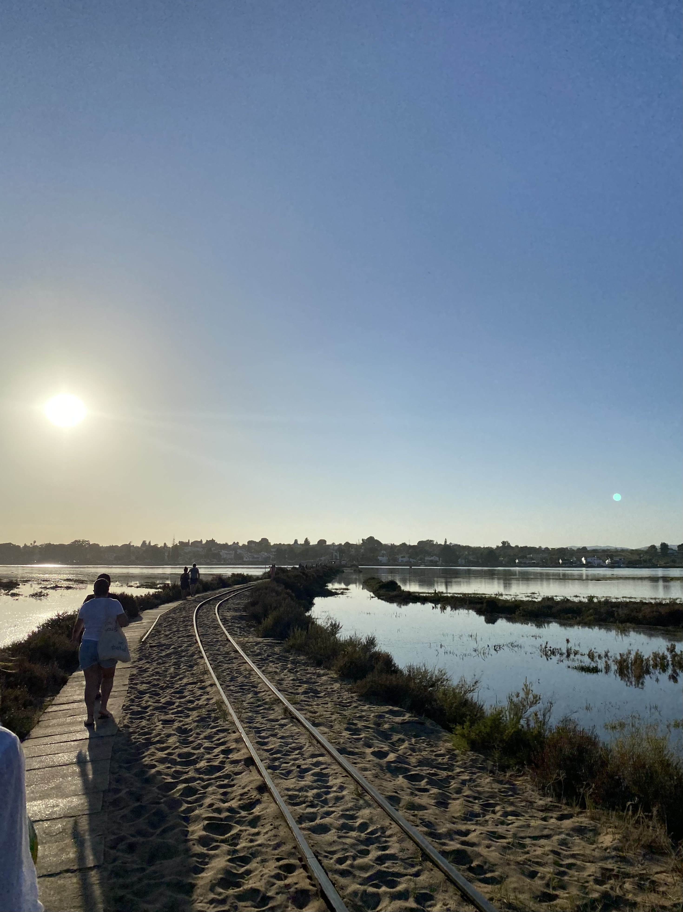
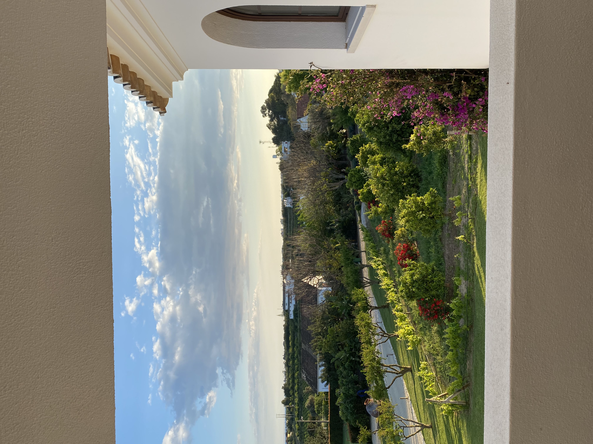
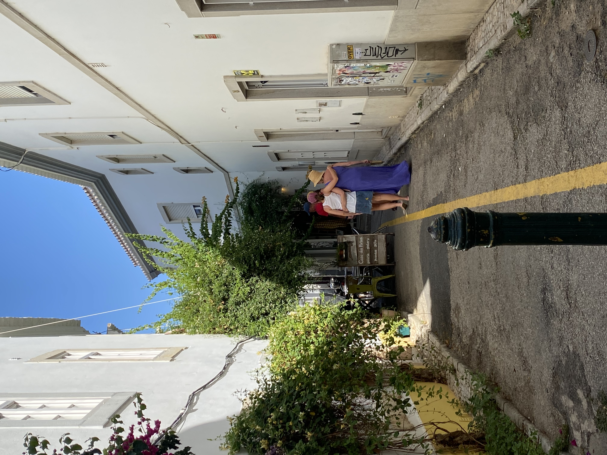
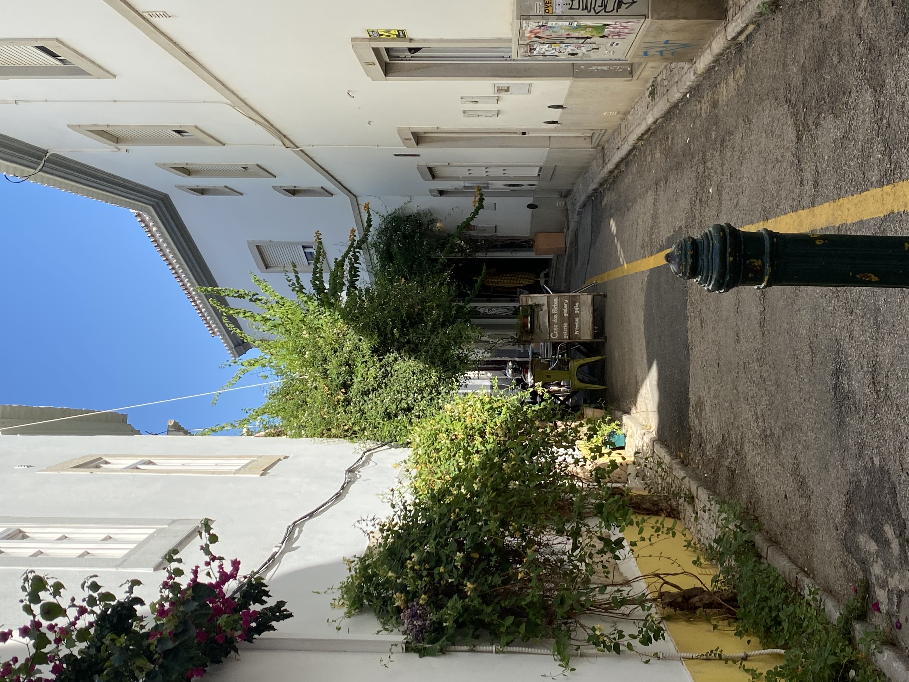
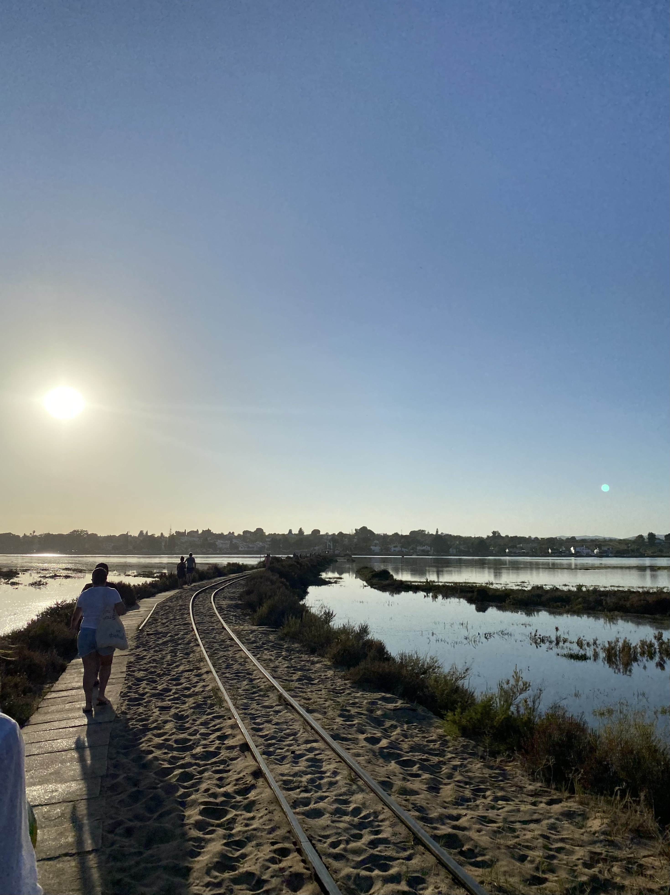
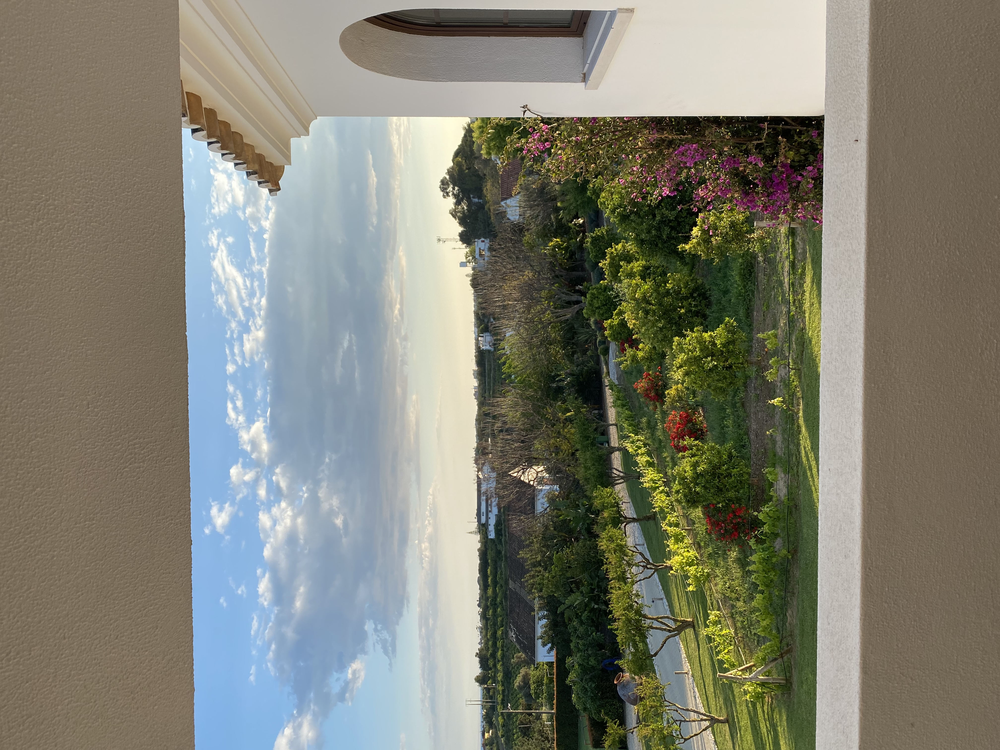

Algemene informatie
Santa Luzia is een dorpje aan de oostkust van de Algarve in Portugal waar de eerste vissers in de 19e eeuw aankwamen. Het is een oud vissersdorpje die haar eigen oude culturele elementen nog kent en nauwelijks is beïnvloed door het moderne toerisme. Zo staat ze vol met oude kleurrijke vissershuisjes en smalle straatjes. Het hele jaar door vinden er levendige festivals en evenementen plaats. Santa Luzia wordt ook wel “Capital do Polvo” genoemd wat de hoofdstad van de octopus betekent. Dit omdat in Santa Luzia elke avond octopus wordt gevangen op traditionelen manieren en deze in de ochtend op de markt wordt gezet. Santa Luzia staat bekend om de vele manieren waarop ze er octopus voorbereiden en bedienen. Verder heeft Santa luzia een prachtige boulevard met uitzicht op de wadden. Kleine stadjes, stranden en eilanden zijn binnen 2 kilometer te bereiken. In de 19e eeuw kwamen de eerste vissers in Santa Luzia aan.
 






